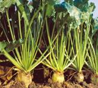

AGR 301 :: Lecture 16 :: TROPICAL SUGARBEET Beta vulgaris spp. Vulgaris

Importance of sugarbeet
- Tropical sugarbeet is a biennial sugar producing tuber crop, grown in temperate countries
- This crop constitutes 30% of total world production and distributed in 45 countries.
- Now tropical sugarbeet hybrids are gaining momentum in tropical and sub tropical countries including Tamil Nadu as a promising energy crop and alternative raw materials for the production of ethanol.
- Apart from sugar production, the value added products like ethanol can also be extracted from sugarbeet.
- The ethanol can be blended with petrol or diesel to the extent of 10% and used as bio-fuel.
- The sugarbeet waste material viz., beet top used as green fodder, beet pulp used as cattle feed and filter cake from industry used as organic manure.
Tropical sugarbeet now emerged as commercial field crop because of the favourable characters like
- tropical sugarbeet hybrids suitable for Tamil Nadu
- Shorter duration of 5 to 6 months
- needs moderate water requirement of 60-80 cm.(iv) higher sugar content of 12 – 15% (v) improve soil conditions because of tuber crop and
- grow well in saline and alkali soil.
- The harvesting period of sugarbeet coincides with March – June, the human resource of sugar factory in the off season may efficiently utilized for processing of sugarbeet in the sugar mills, which helps in continuous functioning of sugar mills.

Hybrids and duration
The tropical sugarbeet hybrids suitable for cultivation in Tamil Nadu are
- Cauvery,
- Indus and
- Shubhra.
- The duration of these tropical hybrids will be 5 to 6 months depending on climatic conditions prevailing during crop growth period.
Climate and season
- Tropical sugarbeet require good sunshine during its growth period.
- The crop does not prefer high rainfall as high soil moisture or continuous heavy rain may affect development of tuber and sugar synthesis.
- Tropical sugarbeet can be sown in September– November coincide with North East monsoon with a rainfall of 300 – 350 mm well distributed across the growing period which favours vegetative growth and base for root enlargement.
- The optimum temperature for germination is 20 – 250C,
- for growth and development 30 - 350C and
- For sugar accumulation in 25– 350C.
Season
- September to November and harvested during March and May.
Field preparation
- Well drained sandy loam and clayey loam soils having medium depth (45” cm) with fairly good organic status are suitable.
- Tropical sugarbeet require deep ploughing (45 cm) and followed by 2 – 3 ploughing to obtain a good soil tilth condition for favorable seed germination.
- Ridges and furrows are formed at 50 cm apart.
Manures and Fertilizers
Manures and Fertilizers |
Basal Application |
Top dressing |
Manures |
12.5 tonnes /ha |
- |
BiofertilizersAzospirillum |
2 kg /acre (10 pockets) |
- |
FertilizersNitrogen |
75kg /ha |
37.5 kg / ha each at 25 & 50 DAS |
Seeds and sowing
- Optimum population is 1,00,000-1,20,000 /ha.
- Use only pellated seeds 1,20,000 Nos /ha which require 6 pockets (3.6kg / ha.-One pocket contains 20000 seeds (600 g)]
- The recommended spacing is 50 x 20 cm.
- The pellated seed is dibbled at 2 cm depth in the sides of ridges at 20 cm apart
Weeding and Earthing up
- The crops should be maintained weed free situation up to 75 days.
- Pretilachlor 50 EC @ 0.5 kg /ha or Pendimethalin @3.75lit /ha can be dissolved in 300 litres of water and sprayed with hand operated sprayer on 0-2 day after sowing,
- Followed by hand weeding on 25th day and 50th day after sowing.
- The earthing up operations coincides with top dressing of N fertilizer.
Irrigation
- Tropical sugarbeet is very sensitive to water stagnation in soil at all stages of crop growth
- Irrigation should be based on soil type and climatic condition.
- Pre-sowing irrigation is essential since at the time of sowing, sufficient soil moisture is must for proper irrigation.
- First irrigation is crucial for the early establishment of the crop.
- For loose textured sandy loam soil irrigation once in 5 to 7 days and for heavy textured clay loam soil once in 8 – 10 days is recommended.
- The irrigation has to be stopped atleast 2 to 3 weeks before harvest.
- At the time of harvest if the soil is too dry and hard it is necessary to give pre harvest irrigation for easy harvest. Light and frequent irrigation is recommended for maintaining optimum soil moisture
Pest and diseases
- Pests - Aphids, Tobacco caterpillar and Flea beetles
Diseases
- Root and crown rot, Cercospora leaf spot and Root knot nematode
Integrated pest and disease management
- Seed treatment with Pseudomonas fluorescens @ 10 g/kg of seed
- Summer ploughing and exposing the field to sunlight
- Crop rotation for 3 years with Marigold or gingelly or sunnhemp for root rot and nematode
- Soil application of Trichoderma viride or Pseudomonas fluorescens @ 2.5 kg/ha mixed with 50 kg of FYM before planting
- Sow castor as trap crop around and within fields to attract adult Spodoptera moth for egg laying
- Set up light traps (1 mercury / 5 ha) for monitoring Spodoptera litura
- Setting up pheromone -Pherodin SL @ 12/ha for Spodoptera litura
- Removal and destruction of Spodoptera egg masses, early stage larvae formed in clusters
- Hand picking and destruction of grown up Spodoptera caterpillar
Need based
- Spraying Spodoptera nuclear polyhedrosis virus at 1.5 x 1012 POB/ha
- Spray NSKE 5% for aphids flea beetles and for early instar caterpillars
- Use of poison bait pellets prepared with rice bran 12.5 kg, jaggery 1.25 kg, carbaryl 50% WP - 1.25 kg in 7.5 lit water for Spodoptera litura
- Spray any one of the following insecticides using a high volume sprayer covering the foliage and soil surface
- Chlorpyriphos 20 EC - 2 ml / lit,Dichlorvos 76 WSC - 1 ml/lit, Fenitrothion 50 EC - 1 ml/lit, Spray malathion 50 EC (2 ml/lit) for flea beetle and leaf webber, Spray Imidacloprid 200 SL (0.2 ml/lit) or methyl demeton 25 EC (2 ml/lit) or dimethoate 30 EC (2 ml/lit) for aphids
- Applying neem cake @ 150 kg/ha for root rot
- Foliar spray of Mancozeb 2.5 g / lit or Chlorothalonil 2 g / litre of water for Cercospora leaf spot
- Neem cake @ 1 t/ha or carbofuran @ 33 kg/ha as spot application on 30 days after sowing for nematode management
Harvest and yield
- The Tropical sugarbeet crop matured in about 5 to 6 months. The yellowing of lower leaf whirls of matured plant, Nitrogen deficiency and root brix reading of 15 to 18% indicate the maturity of beet root for harvest.
- The average root yield of tropical sugarbeet is 80 – 100 tonnes / ha.
- Harvesting should be timed so as the roots reach the factory within 48 hours for processing.
- Till such time the roots should not be harvested.
**********
Multiple choice questions
- Apart from sugar, _______ can be extracted from sugarbeet
- Methane b. Ethanol c. Dimethyl ether
- Ethanol produced from sugarbeet can be blended with petrol or diesel to the extent of ______ as biofuel
- 12 % b. 10 % c. 15 %
- Optimum seed rate for tropical sugarbeet is ______ kg/ha
- 5.6 b. 3.0 c. 3.6
- Spacing recommended for sugarbeet is ______
- 50 x 20 cm b. 40 x 20 cm c. 50 x 10 cm
- Fertilizer dose recommended for sugarbeet is ________ kg NPK /ha
- 100 : 75 : 75 b. 100 : 100 : 100 c. 75 : 75 : 75
- ________ crop is used as trap crop to attract Spodoptera in sugarbeet
- Gingelly b. Castor c. Marigold
- _________ % of root brix reading indicates the maturity of sugarbeet
- 15 – 18 b. 18 – 25 c. 25 – 27
- Yield potential of sugarbeet is ________ tonnes/ha
- 100 -120 b. 80 – 100 c. 120 – 150
| Download this lecture as PDF here |